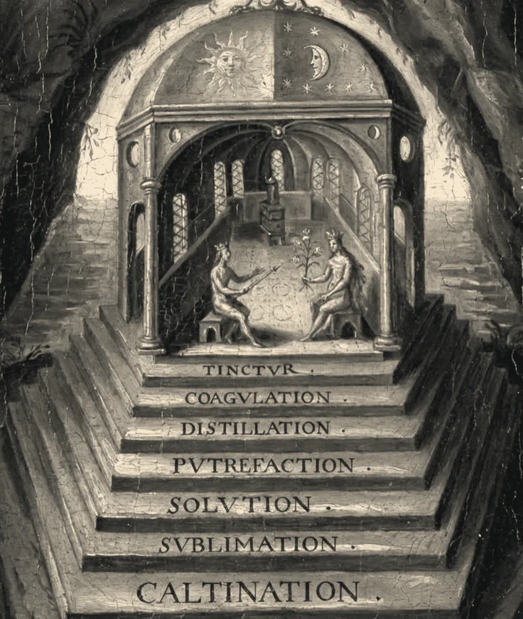

O Caibalion, publicado em Chicago em 1908 por autores que assinam apenas como “Três Iniciados”, organiza seu ensinamento em sete princípios: mentalismo, correspondência, vibração, polaridade, ritmo, causa e efeito e gênero.
O primeiro deles, o mentalismo, é resumido na fórmula “O TODO é MENTE; o Universo é Mental”. Segundo o livro, tudo o que existe seria uma criação mental de um princípio único, que o texto chama de O TODO, e compreender esse princípio seria a chave para os demais.
O segundo, a correspondência, aparece na fórmula “o que está em cima é como o que está embaixo”. O livro a apresenta como herança de Hermes Trismegisto e a usa para ligar os planos físico, mental e espiritual.
O que está em cima é como o que está embaixo, e o que está embaixo é como o que está em cima.
Os princípios seguintes descrevem um mundo em movimento. A vibração afirma que nada está parado; a polaridade, que os opostos seriam graus de uma mesma coisa; o ritmo, que tudo oscila como um pêndulo. Causa e efeito negam o acaso, e o gênero descreve um par de forças que, segundo o livro, age em todos os planos.

O que a pesquisa diz
Os editores registram que a relação entre esses princípios e os tratados herméticos antigos é contestada: vários termos do livro, como “O TODO” e o princípio de gênero, não aparecem no Corpus Hermeticum.
Philip Deslippe, na edição crítica de 2011, relaciona o livro ao movimento do Novo Pensamento nos Estados Unidos e discute a hipótese de que William Walker Atkinson esteja por trás da assinatura coletiva. A Sala apresenta a autoria como hipótese, sem confirmação documental.
Atenção: este tema tem leituras divergentes
A ligação do Caibalion com o hermetismo antigo é afirmada pelo livro e contestada pela pesquisa. Veja as leituras das outras Salas em “Continuar a busca”, abaixo, antes de concluir.